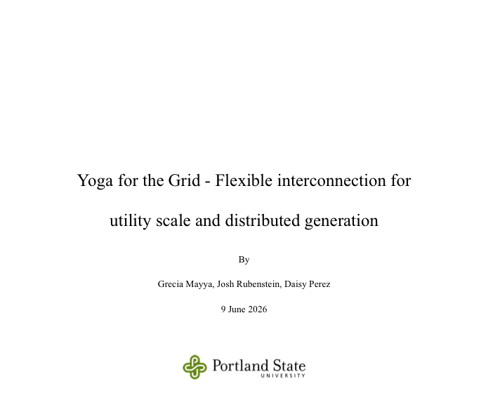

To strengthen my technical knowledge of grid infrastructure, I recently completed a professional development course through Portland State University titled The Smart Grid and Sustainable Communities where I co-authored a paper on interconnection.
The paper explores how flexible interconnection approaches can help support renewable energy deployment. I specifically focused on the technologies and operational tools used by Independent System Operators to manage congestion such as grid enhancing technologies, redispatching and curtailment.
This is a timely area of study as states, utilities, and grid operators continue to grapple with the increasing volume of renewable energy projects waiting to interconnect.
Open PDF